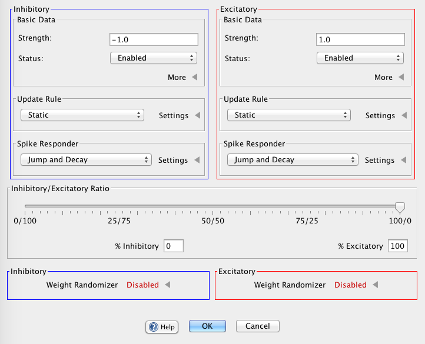

Excitatory/Inhibitory Properties
The Excitatory/Inhibitory properties dialog is a sub-panel within the dialogs for making all to all and sparse connections. Within this sub-panel the user can set the percentage of connections which are excitatory (always complimentary to the percentage of inhibitory connections), the type of synapses to be used for inhibitory and excitatory connections, and the range and distribution of the strengths of inhibitory and excitatory connections.

Setting Basic Data
Udating Synapse Types
When clicking on the synapse type, a drop down menu will appear with a list of synapse types. Users may select the kind of synapse to be used between a set of source and target neurons and furthermore specify different types of synapses to be used for inhibitory or excitatory connections, should they chose to. When clicking "Settings," a drop down menu will appear with properties users can modify (descriptions of the different types of synpase connections with their properties can be found here).
Setting Spike Responders
See spike responder
Setting the Ratio of Excitatory to Inhibitory Connections
The percentage of connections which are excitatory over inhibitory can be set using the Excitatory/Inhibitory slider or by specifying the percent of excitatory connections manually in the % Excitatory text field. Moving the slider completely to the left entails that all connections will be inhibitory (weight strength in the inhibitory range, generally some value less than 0), likewise moving the slider completely to the right entails that all connections will be excitatory (weight strength in the excitatory range, generally some value greater than 0). All slider values in between will produce varying ratios of excitatory and inhibitory connections. Setting the % of excitatory connections manually with the text field entails (100-value entered)% of connections will be inhibitory.
Randomizing Connection Strengths
Using the above buttons one can randomize connection strengths before laying down connections, furthmore one can specify the parameters used to randomize these values. Otherwise, synaptic strengths will default to 1 for excitatory connections and -1 for inhibitory connections. Clicking the dice button (after clicking the checkbox to enable randomized weights) will bring up a random panel wherein the distribution type (uniform or gaussian), the upper and lower bounds, and the standard deviation (if applicable) can be set. As with other inhibitory/excitatory properties, the parameters for randomily generating strength values is distinct for inhibitory and excitatory connections. For instance: in the above picture, randomized excitatory weights have been selected as evidenced by the colorized dice; assuming their properties were then set, connection strengths for excitatory connections will lie in the specified distribution and all inhibitory connections will have a strength of -1.